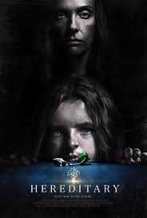

Hereditary is a 2018 American psychological horror[4] film written and directed by Ari Aster in his feature directorial debut. Starring Toni Collette, Alex Wolff, Milly Shapiro, Ann Dowd, and Gabriel Byrne, the film follows a grieving family tormented by sinister occurrences after the death of their secretive grandmother.
Release date: 8 June 2018 (USA)
Director: Ari Aster
Box office: $87.8 Million
Distributed by: A24
Based on: The Hereditary; by Jennifer Lame, Lucian Johnston
Cinematography: Pawel Pogorzelski
Watch Movie